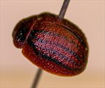
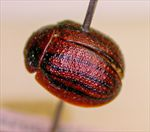
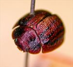
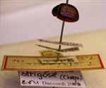
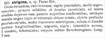

Click on images to enlarge
.jpg){kind=link}

Paropsis strigosa type specimen, lateral view
.jpg){kind=link}

Paropsis strigosa type specimen, dorsal view
.jpg){kind=link}

Paropsis strigosa type specimen, oblique view
.jpg){kind=link}

Paropsis strigosa type specimen and labels
{kind=link}

Paropsis strigosa, description
Name
Trachymela strigosa (Chapuis, 1877)
Type specimen
Location: RBINS
Label data: “Paroo River”, “Coll. Chapuis”, "TYPE", “P. strigosa Chp Paroo R.”, "Type", “Trachymela strigosa (Chap) ref. M. Daccordi 2003”
Original description
[Original description shown in figure, translated from Latin using ChatGPT, 04/2026]
Ovate-rounded, reddish-brown; head punctulate, with a black spot in the middle; pronotum finely and rather densely punctulate, at the sides obscurely depressed with the larger punctures confluent, on each side marked with a large black spot and a blunt tubercle; elytra deeply punctate-striate, in the middle somewhat transversely strigose; suture and four narrow longitudinal lines black; with nine interspaces, the first obsolete, tuberculate; underside of the body yellowish-ferruginous. Length 7 mm.
Notes
Blackburn (1896) deals with T. strigosa as part of his 'subgroup iii' (i.e., those species without "strongly marked characters", whose greatest height is not or scarcely in front of the middle of the elytral margin and whose elytra are not depressed under the humeral callus). Within that group, he characterises it as:
(1) Elytra with a distinct postbasal impression on disc;
(2) the elytral margin (viewed from the side) strongly sinuous;
(3) elytra without costae.
This is almost certainly Ta88, species that is widespread in southern Australia, from central N.S.W. in the east to the S.W. of Western Australia. The most northerly known specimens of Ta88 have been collected north-east of Ivanhoe, about 200km from the Paroo River, where they were found in large numbers. Records in the Atlas of Living Australia (ala.org.au) indicate that at least two of its known host species are widespread in the lower Paroo River area.
Blackburn notes that he has specimens from the "Parao River" and "Swan River" that are indistinguishable and speculates that Chapuis' location is likely in error, but the species is certainly found at or near both locations. Item (2) in Blackburn's key indicates that the elytral margin is strongly sinuous - this likely refers to the tendency of the elytral lateral margin near where it joins with the anterior margin to be slighly downturned in many examples of this species, a condition that is not often present in Trachymela but is also somewhat variable in this species. Note that the holotype does not show this condition.
References
Blackburn, T. 1896, "Revision of the genus Paropsis. Part I", Proceedings of the Linnean Society of New South Wales, vol. 21, no. 4, 637-693 (page 678, 686).
Chapuis, F. 1877, "Synopsis des espèces du genre Paropsis", Annales de la Société Entomologique de Belgique (Comptes-rendus), vol. 20, 67-101 (page 97).
Copyright © 2026. All rights reserved.